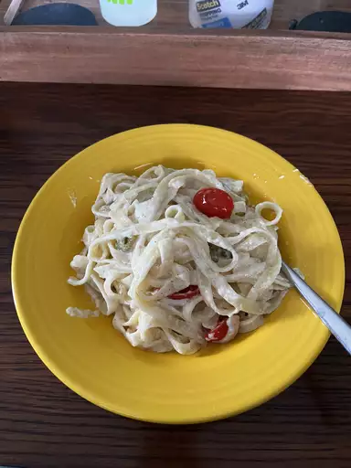

I created this fettuccine Alfredo by modifying my mother's recipe. I get nothing but rave reviews when I make this dish. My fave is fettuccine Alfredo connoisseur, and I scrapes the pan every time. I must warn you, this recipe is not for the health-conscious!
- allrecipes.com
- 24 ounces dry fettuccine pasta24 ounces dry fettuccine pasta
- 1 cup butter
- ¾ pint heavy cream
- salt and pepper to taste
- 1 dash garlic salt
- ¾ cup grated Romano cheese
- ½ cup grated Parmesan cheese
- Bring a large pot of lightly salted water to a boil. Add fettuccine and cook for 8 to 10 minutes or until al dente;drain.
- Melt butter into cream in a large saucepan over low heat; add salt, pepper, and garlic salt. Increase the heat to medium; stir in grated Romano and Parmesan cheese until melted and sauce has thickened.
- Add cooked pasta to sauce and toss until thoroughly coated; serve immediately.